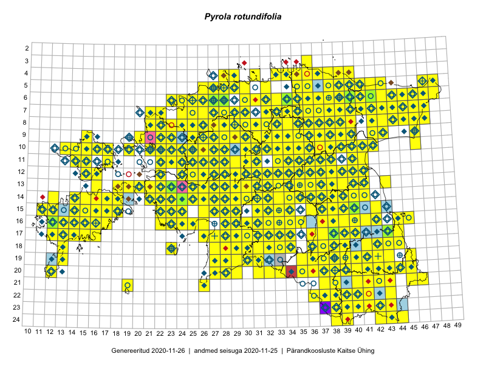

Pyrola rotundifolia
Uuendatud: 2016-12-02
Kaardile koondatud taksonid: Pyrola rotundifolia L.

Kaart põhineb 562 vaatlusel. Taksonit on leitud 363 ruudust.
Kuvatud viited 20 esimesele andmebaasikirjele, ülejäänud PlutoFis
- Thea Kull: 2015-04-27: 07-45: ala
- Tiit Hallikma, Toomas Kukk, Indrek Tammekänd: 2015-06-09: 12-28: ala
- Malle Leht: 2015-07-09: : ala
- Thea Kull: 2015-07-07: 16-40: ala
- Malle Leht: 2015-08-02: : ala
- Toomas Kukk, Eerik Leibak: 2015-08-09: 14-15: ala
- Toomas Kukk, Eerik Leibak: 2015-08-08: 15-18: ala
- Toomas Kukk, Eerik Leibak: 2015-08-12: 10-17: ala
- Toomas Kukk, Peedu Saar: 2014-09-25: 07-42: ala
- Toomas Kukk, Peedu Saar: 2014-09-24: 06-41: ala
- Rein Kalamees: 2015-09-03: 05-32: ala
- Ott Luuk, Toivo Sepp: 2015-07-29: 09-31: ala
- Peedu Saar, Ott Luuk: 2015-06-21: 14-41: ala
- Peedu Saar: 2015-07-04: 18-44: ala
- Peedu Saar: 2015-07-15: 15-39: ala
- Ott Luuk, Peedu Saar: 2015-08-13: 24-44: ala
- Toomas Kukk, Eerik Leibak: 2015-04-26: 05-47: ala
- Toomas Kukk, Eerik Leibak: 2015-04-26: 05-48: ala
- Toomas Kukk, Eerik Leibak: 2015-04-27: 07-42: ala
- Ott Luuk: 2015-06-28: 13-26: ala